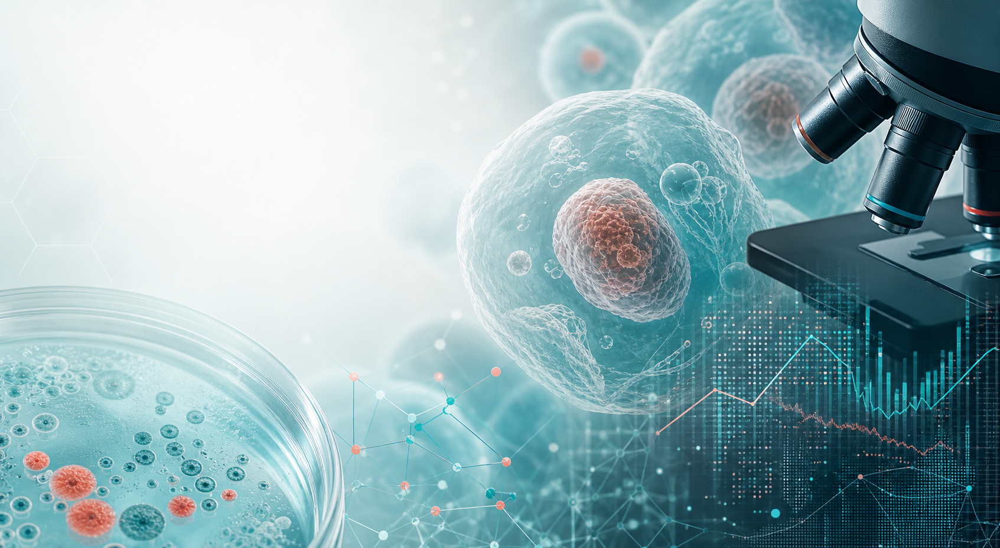

Stress Response and Adaptation
How cells detect nutritional, inflammatory, or environmental stress and reorganize their programs to survive, repair, or fail.
Cellular systems | Disease biology | Quantitative methods
We investigate how cells sense stress, coordinate repair, and change state during development and disease. Our work combines experimental biology, imaging, molecular profiling, and computational analysis.
Welcome
Our group studies the mechanisms that connect cellular behavior to tissue-level outcomes. We are especially interested in how biological systems preserve function under stress, how damaged tissues adapt, and how quantitative measurements can reveal hidden regulatory states.
The site is organized around the same core structure as a modern academic lab page: research themes, people, publications, news, gallery, and contact information.
Research Themes
How cells detect nutritional, inflammatory, or environmental stress and reorganize their programs to survive, repair, or fail.
How developmental and disease contexts reshape identity, plasticity, and communication between neighboring cells.
How imaging, transcriptomics, and computational analysis can turn complex biological dynamics into testable models.

Lab Culture
We value reproducible experiments, shared methods, direct mentorship, and open scientific conversation. Students and trainees are encouraged to build strong conceptual foundations while developing the technical fluency needed for modern biological research.